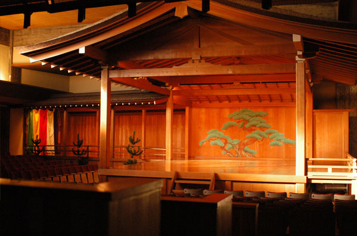
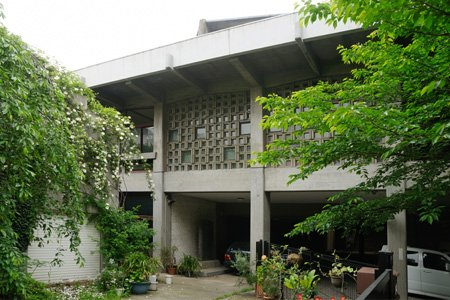
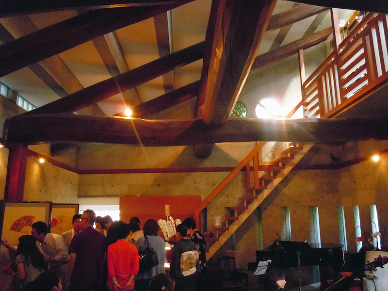

■梅若能楽学院会館

中野坂上にある、日本の伝統芸能「能」を実践的に学べる学校です。
能を本格的に学びたいという方に広く門戸を開いています。
もちろん伝統的な『能』の鑑賞もできますが、近年ではミュージカルやクラシックバレエ、アイドル声優のライブにも利用されており、
形式に囚われずに、能文化に触れることができます
■外装・内装

外観にはコンクリートが使われ、荘厳な印象

コンクリートうちっぱなしの内壁に、大胆に配置された組み木細工を思わせる階段
■マップ
| 住所 | 東京都中野区東中野2-6-14 |
| 電話 | 03-3363-7748 |
| 開館時間 | 不定 |
| 休館日 | 不定 |
総武線・東中野駅西口 徒歩８分
大江戸線 東中野駅 Ａ3出口 徒歩８分
大江戸線 中野坂上駅 Ａ２、２出口 徒歩８分
丸の内線 中野坂上駅 Ａ２、２出口 徒歩８分